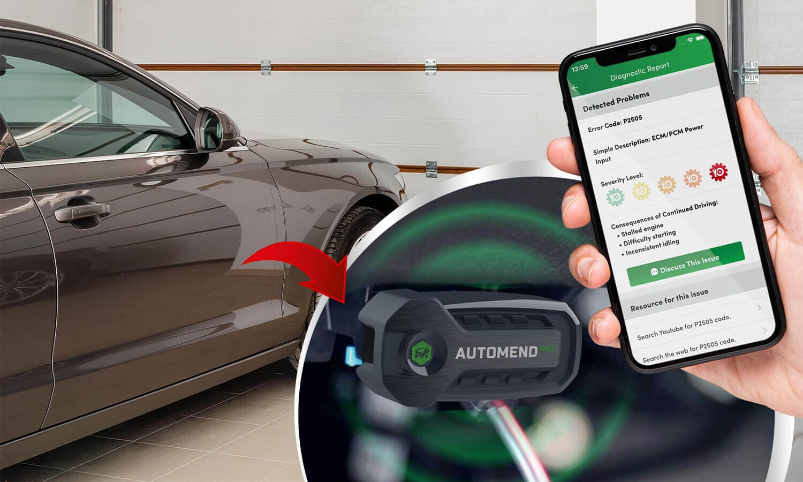

The best Car Code Reader

If you’re clueless about what all those lights in your vehicle mean, and have no idea how to maintain your car properly, a car code reader is exactly what you need. However, many questions may arise. What are these readers and why do I need one? How do I know which one is the best for me?
Our team tested the best car code readers currently available online to present you with a list of Top 5 car code readers judged by features, ease of use, reliability, and overall value for money. So, check our list, and pick the best one!
Main features
A car is the most common mean of transportation. Therefore it is equally important to take proper care of our vehicles. The problem here is that not many of us are skilled mechanics with a deep understanding of the field. That is why it could be rather challenging to ensure decent car maintenance. We usually push these problems away, ignore the warning lights, and only turn to mechanics when it starts getting slightly out of hand. Here we encounter another issue: the trap of mechanics at the car service who charge unreasonable sums of money for a quick check-over. To avoid this, you need a car code reader to show you the problem before the mechanic deceives you into paying more than you need.
Automend Pro is an ideal device for that. The most notable features of this device include clearing the check engine light. There is no need to dread it as Automend Pro will tell you exactly what the problem is and why that light is on. You can even turn it off using Automend Pro once you identify the issue. Thanks to this feature, you can take your vehicle in for repairs and tell precisely what needs to be done. With Automend Pro, you have the power to control your car by knowing what needs to be done.
Automend Pro also helps you save a great deal of money not only at the service but also by showing you the statistics on how much fuel your vehicle consumes. Thanks to this, you can monitor and adjust the amount of gas you use, thus save some money. Another unique feature is that Automend Pro can help quickly locate your car, no matter where you park it—no more getting lost in the parking lot! Last but not least, Automend Pro is excellent for preventive maintenance. This way, you can fix your vehicle's problems before they end up in unrepairable damage. As a matter of fact, Automend Pro reminds you when maintenance is not just suggested but actually needed.
What’s also great is that with Automend Pro, you can monitor multiple vehicles simultaneously. Simply put sensors in multiple cars and get information about all of them directly to one phone. The Automend Pro application also shows you a timeline of your mileage to know when maintenance is needed. And these features are only a few of the many. The hype about this device is entirely reasonable as it demonstrates impeccable performance and the best features. See it for yourself!
Ease of use
You don’t need specific knowledge to use an OBD scanner. All it takes is three steps to have your Automend Pro running. First of all, start with your engine turned off. You need to locate the OBD port in your vehicle and then plug in the device. Then, install the Automend Pro application on your phone (it works on Android and iPhone operating systems!). Lastly, sync your phone with Automend Pro and see all your vehicle's diagnostics on the app. It's as easy as that! We also have a few tips before using Automend Pro: always remember that you should use it for its intended purpose. Do not attempt to insert Automend Pro into any sockets other than your vehicle’s OBD port.
Automend Pro was created to detect problems with your car so that a mechanic could fix them, but it is entirely up to you to decide on the appropriate actions once you discover the issue of the vehicle. Final point, if you plan to not use your car for more than a couple of days, it is recommended that you unplug your Automend Pro. Follow these instructions, and Automend Pro will give you the best it can! If you worry that understanding the diagnostics report may be confusing, rest assured that Automend Pro will tell you everything you need to know in the simplest of terms. It is widely praised for its clear descriptions and understandable terminology.
Reliability and Sturdiness
You might wonder what kind of diagnostics you would get with Automend Pro? Well, there is a long list of information that Automend Pro can provide you. It can show you coolant and oil temperature, fuel system status, vehicle speed, air intake temperature, oxygen level, and mileage. More importantly, Automend Pro can give you the recommended maintenance guidelines and the history of your vehicle. The latter is of exceptional significance because if you buy a used car, you should know what kind of problems it had in the past and what the seller may have kept from you.
Automend Pro can also show you reports, a thorough explanation of the DTC codes your mechanic charges you to fix. Not to forget that Automend Pro works in conjunction with the sensor to give you real-time updates of your vehicle’s condition. There is no doubt that with such a detailed list of information, Automend Pro is the one to be trusted. As for its sturdiness, it is definitely more reliable than FIXD, which tends to break easily and is a little more challenging to use. That is why Automend Pro is virtually unrivaled in terms of quality and simplicity of usage.
Value
Overall, Automend Pro is the best thing you can do for your car. It is ideal in all terms. Do you want the simplicity of usage? You got that. Do you want a detailed and yet understandable diagnostics report? You got it. However you look at it, Automend Pro seems to have no flaws. It has a friendly price tag, so it's affordable to anyone, let alone the amount of money you would save from greedy mechanics at the car repair service. We claim Automend Pro as the most trustworthy car code reader of all those we've tested. The only issue is that the supply is highly limited, and the stock runs out quickly. Do not wait until it’s too late, and try it yourself!
Check Availability